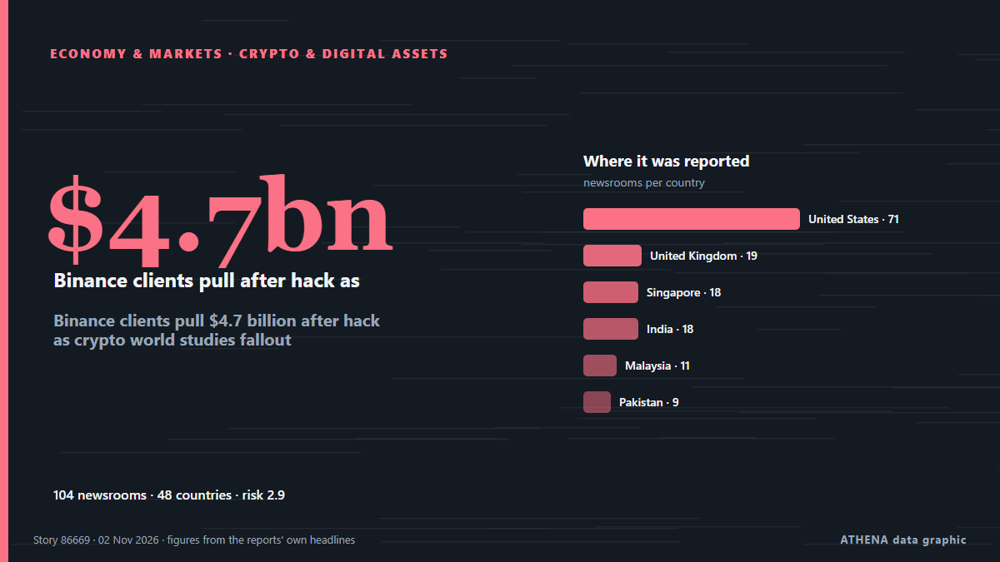

ATHENA Glaux Intelligences — Global news intelligence — every number explained
World news, checked across countries
ATHENA Glaux follows hundreds of news outlets around the world and groups their reports into events. For every event you see how many outlets in how many countries reported it, who was first, and a risk score with its reasons — updated every 15 minutes, in seven languages.
Live from the newsBinance clients pull $4.7 billion after hack as crypto world studies fallout111 outlets · 50 countries · Risk 3.4 · Sources: MINING.COM, Decrypt

Economy & MarketsBinance clients pull $4.7 billion after hack as crypto world studies fallout
An on-chain tally puts the suspected Binance drain at $5.57 billion across three blockchains, as Tether and Circle froze $1.8 billion. from Decrypt
US delivery of 500 Patriot missiles to Ukraine will span 3 years starting in 2030
NATO Supreme Allied Commander Europe General Alexus Grynkewich said the United States continues to supply Ukraine with Patriot interceptor missiles, as well as weapons packages paid for by European… from Ukrinform (English)
Russian bomb attacks on aid centre and shelter kill 26, Ukrainian officials say
Ukrainian President Volodymyr Zelensky said it ‘is further proof that Russia wants no de-escalation’. from The Irish News (Belfast)

Today in numbers
| 02:00 | 286 |
|---|---|
| 03:00 | 388 |
| 04:00 | 366 |
| 05:00 | 517 |
| 06:00 | 685 |
| 07:00 | 2031 |
| 08:00 | 1103 |
| 09:00 | 1072 |
| 10:00 | 676 |
| 11:00 | 824 |
| 12:00 | 899 |
| 13:00 | 807 |
| 14:00 | 826 |
| 15:00 | 921 |
| 16:00 | 806 |
| 17:00 | 907 |
| 18:00 | 553 |
| 19:00 | 630 |
| 20:00 | 398 |
| 21:00 | 449 |
| 22:00 | 449 |
| 23:00 | 387 |
| 00:00 | 451 |
| 01:00 | 311 |
Risk of today's events
Netanyahu Pressing Trump To Attack Iran After Midterms: Report
Democratic doctors aim to convert the backlash against the Trump administration’s health policies into midterm votes. from Al Jazeera English
Oleshky ceasefire expires, Ukraine evacuates civilians from parts of Kherson region
Nov 1 - Ukraine's military said it evacuated 167 people from threatened areas of southern Kherson region on Sunday as a temporary local ceasefire expired — two days after buses carried residents out… from The Straits Times
UK PM Burnham says he is ‘open’ to formal apology for slavery, but rules out reparations
At least 12.5 million Africans were abducted and sold into slavery. from Express Tribune
Most widely covered
- Economy & Markets
Binance clients pull $4.7 billion after hack as crypto world studies fallout
50 countries · 111 outlets
Emerging signals
- Sudden surge · Active nowBTC
- Sudden surge · Active nowCyclone Murasu
- Sudden surge · Active nowADIPEC
- Sudden surge · Active nowStevens
- New name in the news · Active nowTucker Carlson
Official warnings
- Red notification for tropical cyclone FOUR-26. Population affected by Category 1 (120 km/h) wind speeds or higher is 1.156 million .Red · GDACS ·
- Cyber chief: UK facing AI-powered attacks on critical infrastructure within two yearsadvisory · UK National Cyber Security Centre ·
- M 6.0 - 165 km NW of Port-Olry, VanuatuM6.0 · USGS ·
- M 6.2 - 43 km ESE of Port-Olry, VanuatuM6.2 · USGS ·
- M 6.0 - 214 km NW of Port-Olry, VanuatuM6.0 · USGS ·
Get ATHENA on Telegram
Join the free ATHENA Glaux group and receive the news the moment it is published here:
- breaking events with a risk of 6 or more
- an hourly round-up of the top events
- risk-tracker updates (Hormuz, Red Sea, Taiwan, sanctions and more)
- the daily briefing every morning at 10:00 (Athens time)
- a weekly outlook
- official warnings, emerging signals and rising risks
Tap the button, Telegram opens, press Join. Posts are in English; you can mute or leave at any time. No Telegram yet? It is free at telegram.org.
Risk trackers
More ›Global risk outlook — week 45, 2026 (2–8 Nov) ›
Geopolitics, Politics & Security
More ›Explosions heard on Qeshm Island, Bandar Lengeh
TEHRAN, Nov. 03 (MNA) – Local Iranian media reported hearing of explosions on Iran’s southern Qeshm Island and Bandar Lengeh on Moday night. from Mehr News (English)
- Diplomacy & summits
Urgent: U.S. to host trilateral talks with Russia, Ukraine in Abu Dhabi on Nov. 10-11, says Witkoff
- Elections & politics
The top 10 things to watch for in the US midterm elections
- Wars & conflicts
Iran Says Contacts Over Ending War Continue After Talks Finish With No Breakthrough
- Elections & politics
Trump makes final US midterm pitch at troubled Reflecting Pool
Economics, Finance & Markets
More ›New Zealand's central bank registers Revolut as country's 27th bank
Regulatory approval means Revolut Bank NZ will be the nation's first digital bank. from BusinessDesk
- Stocks, bonds & markets
US stocks recover some of last week's sell-off after oil prices fall sharply
- Stocks, bonds & markets
Asian stocks mixed as tech sector struggles to rebound from selloff
- Banking & credit
Owner of Serbia's Delicenced ALTA Banka Gets Arrested
- Forecasts & recession risk
Danny Russell picks the horses to tip at this year's Melbourne Cup
Trade, Industry & Infrastructure
More ›Trump floats 'concept' of US-Canada deal that includes pipeline talking to Carney
MONTREAL/DUBUQUE, Iowa — US President Donald Trump said on Sunday that his administration has the “concept” of a… from BusinessWorld
- Shipping & ports
NAVTOR introduces real-time AIS streaming in NavFleet platform
- Trade & trade deals
US to drop South Africa, Rwanda from AGOA duty-free trade initiative
- Shipping & ports
Vessel struck by unknown projectile off Oman: UK maritime agency
- Trade & trade deals
Underground areas of Hagia Sophia to open, revealing new sections
Energy, Resources & Environment
More ›Oil drops 7% as Iran signals openness to peace talks
Both oil benchmarks closed lower for the day. from The Business Times
- Water & natural resources
Documentary to Present Findings of Expedition Exploring Danube River amid Extreme Low Water Levels
- Nuclear energy
(Yonhap Interview) S. Korea prepares launch of new SMR review system this month: nuclear watchdog chief
- Oil & gas
Oil prices pull back sharply on signs of US-Iran diplomacy to end war
- Extreme weather & natural disasters
Flash Flooding Triggers Evacuations in Southwest and Dire Warning for Colorado Spa Town
Technology, AI & Cybersecurity
More ›UK adventurer ends epic 28-year trek across jungles, frozen sea
Karl Bushby said he would now be focusing on a documentary about him by German filmmaker Werner Herzog, as well as writing a book and making the adjustment back into normal life. from Courthouse News
- Cybersecurity
UK cyber chief says the UK will face AI cyberattacks on critical infrastructure by 2028
- Cybersecurity
Fridge cyberattack hits supermarkets across Europe
- Cybersecurity
Hackers hit Ukraine, Russia's emergency apps, send fake nuclear, chemical attack alerts
- Cybersecurity
Jack Grealish not expected to return for Everton at Newcastle after breach of club discipline
Business, Companies & Investment
More ›Sales of Galaxy Z Fold 8 increase following launch of Apple's 1st foldable smartphone
SEOUL, Nov. 3 (Yonhap) -- Domestic sales of Samsung Electronics Co.'s latest Gal... from Yonhap (English)
- Corporate strategy
Nakilat Names Nine New Gas Carriers in South Korea
- Corporate strategy
Apple FYQ4 Revenue Tops Forecasts On iPhone Sales As New CEO John Ternus Steps Up
- Sectors & company risks
Drivers will pay the price for Trump’s fuel economy rollbacks
- Boards & executives
AirAsia names Bahrain board, sets March deadline for flights
Health, Science & Research
More ›Molecular traces from 'blood cells' found in 115-million-year-old dinosaur bones
The surprise discovery of an iron-carrying molecule preserved in the bones of a Brazilian dinosaur adds to research about soft tissues found in fossils that are millions of years old. from ABC News Australia
- Outbreaks & public health
Ebola fatality rate tops 50% after hundreds of deaths added to Congo toll
- Pharma & biotech
US approves cheap version of HIV prevention shot
- Space science & physics
NASA telescope is on the verge of plunging back to Earth after failed rescue mission
- Health systems
PM stresses timely completion, efficient management for Jinnah Medical Complex
Society, Law & Public Policy
More ›US Supreme Court rejects bid by Trump administration to set aside 20,000 California ballots
Decision comes one day before midterm elections. from Anadolu Agency (English)
- Courts & justice
Lindsay Clancy’s lawyers urge Massachusetts judge to dismiss murder case
- Accidents & emergencies
20-year-old woman was part of team piloting plane that slammed into Florida street killing 9
- Migration & population
Taliban government voices ‘serious concern’ over US Afghan deportation plans
- Accidents & emergencies
4 Americans and 1 Canadian among the 69 dead in Spain’s train collision
Sport
More ›Everton beat Newcastle 1-0 to pile pressure on Jaissle
Live updates as Matthias Jaissle's side look to bounce back from their Carabao Cup exit. from Chronicle Live (Newcastle)
- US sports
Russia back in ice hockey world championships after sport court ruling
- Formula 1 & motorsport
Russell ‘distraught’ as Antonelli seals title; Mercedes fined for media no-show
- Football
FIFA to grant access to documents from scrapped World Cup sell-off plan
- Football
Harry Kane misses penalty in first match since Ballon d'Or triumph
Culture, People & Lifestyle
More ›My Chemical Romance Tops the Billboard 200 With 20-Year-Old Album
The rock band's The Black Parade reached the top slot with its 20th anniversary reissue, beating out Olivia Rodrigo. from Rolling Stone